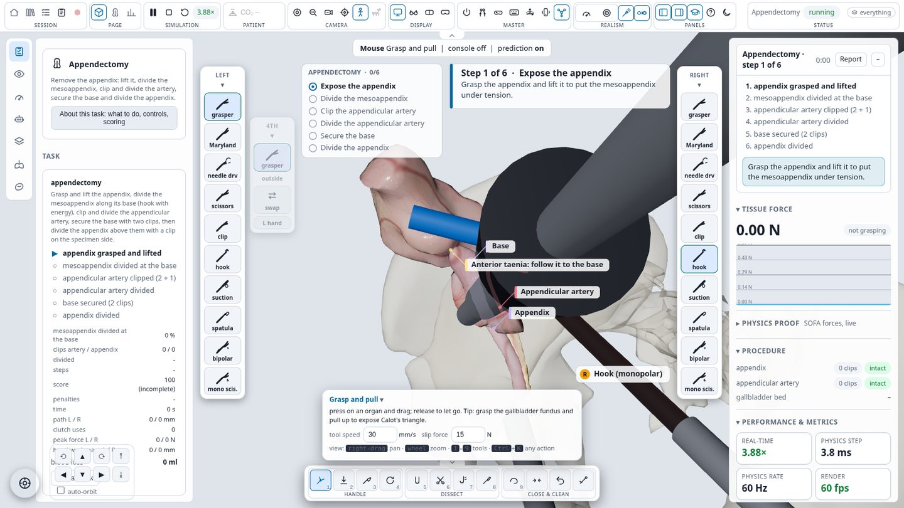
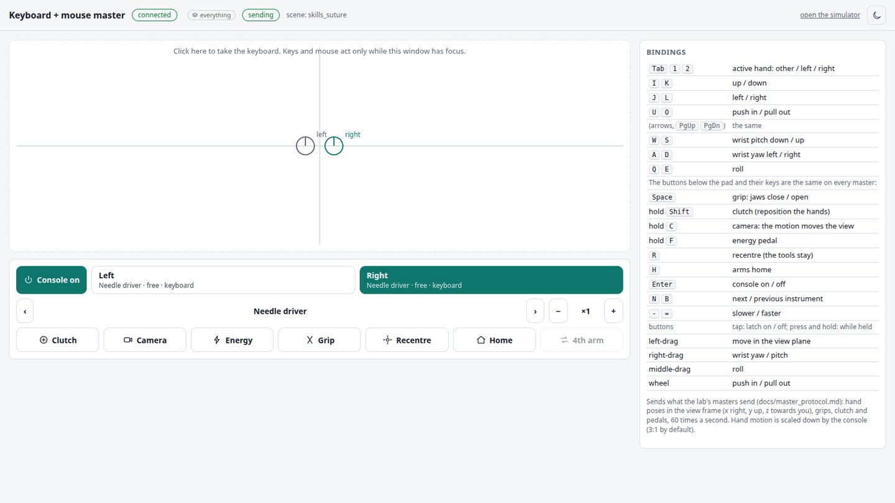
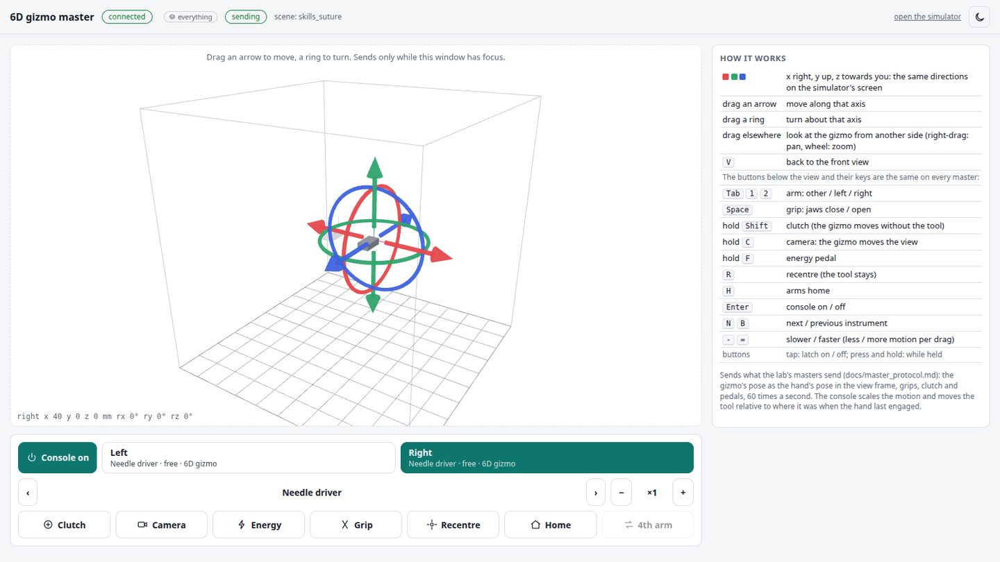
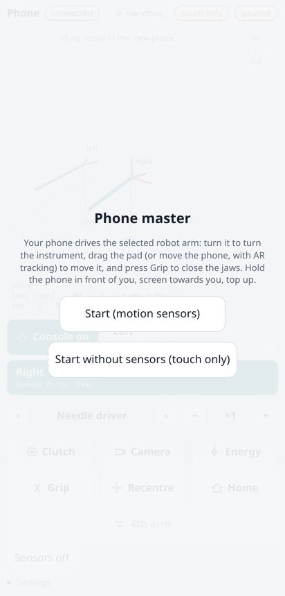

Robot console and master devices
A console with two wristed instruments, a 4th arm and a 30° laparoscope docked on its field. Any master that speaks the open protocol drives it under the same limits: motion scaling, the arms' speed limits, the remote centre at each port, the shaft and tissue limits.

The console
- Docking. The robot docks itself after insufflation: the laparoscope aimed at its focus with the lens kept clear of tissue, the instruments where their shafts hide the least of the view, organs moved out of the ports' corridors.
- Console on or off. With the console on, the masters drive the instruments in the laparoscope's frame; with it off, the same masters drive them in the page's 3D view. Only the view and interaction change.
- The 4th arm. The arm swap (the pedal, a key, a held button on a headset) hands one master the 4th arm; the arm left behind is locked.
- Instruments, chosen per arm: grasper, Maryland dissector, needle driver, scissors, monopolar scissors, clip applier, hook, bipolar, suction and spatula. Released instruments never jump; the shafts limit by force, not as walls.
Master devices



A phone as a master
Turning the phone turns the instrument's wrist; with WebXR AR tracking, moving the phone moves the instrument. Tap to grip, hold to clutch, hold for the camera or energy pedal. The phone vibrates as the jaws take hold and as the force rises past 8 N. XR controllers and lab devices speak the same protocol.
Master protocol v2
A lab device sends one JSON message per sample (a hand pose per arm, the gripper, a clutch, the pedals) over a WebSocket or UDP. A small standard-library Python stub implements it; a device program signs in through the browser (a device-pairing page), so no password is ever stored in it.
import master_device_stub_ws as md
md.connect("sim.example.org") # the first time: sign in via the link it shows
while True:
T, raw, clutch = read_my_device() # your driver
md.send_to_sim("left", pose=T, grip_raw=raw, clutch=clutch)
md.set_pedals(camera=False, clutch=False, cautery=False)- Hello and welcome. A device negotiates its channels (force, torque, grasp, contact, organ, tip, state), its arms (the 4th arm included), rate, frame (device, view or world), gain, motion scaling and saturation.
- Force feedback. Opt-in per device; the forces are SOFA's, read after the step, so the physics is the same with or without a subscriber.
- Several masters. One master per hand: the first keeps it while it streams, the other is ignored and both are told; the page warns and offers "take control".
- Compatibility. Unknown fields are ignored; a device gets only the channels it asked for; a device that sends no hello is a version 1 master and drives as before.
- A simulated master speaks the protocol as a real device does, for end-to-end tests without hardware, and a latency page measures each device from a camera recording.